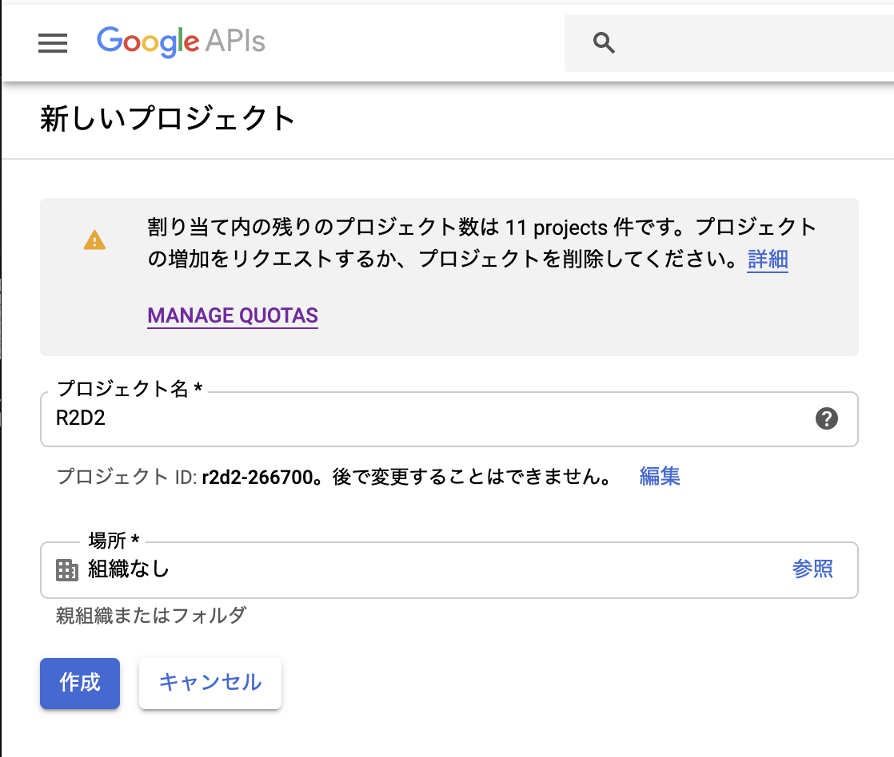
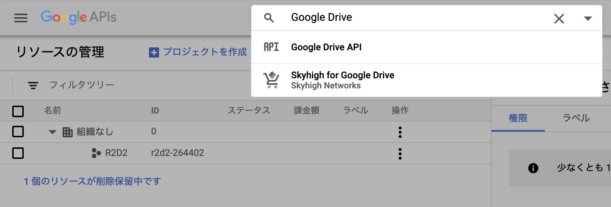
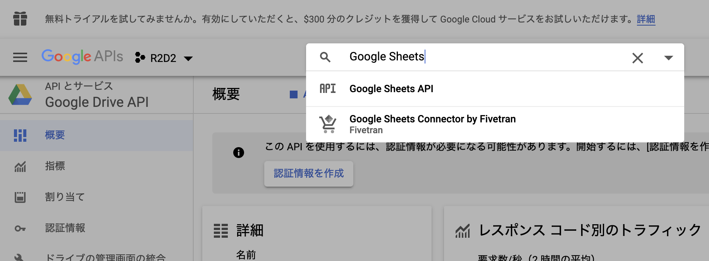
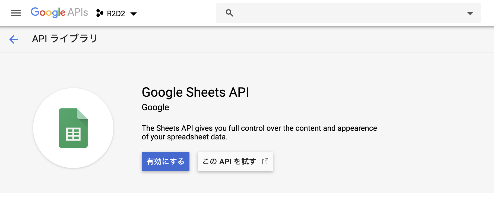
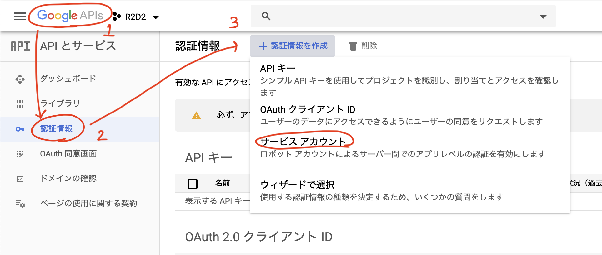
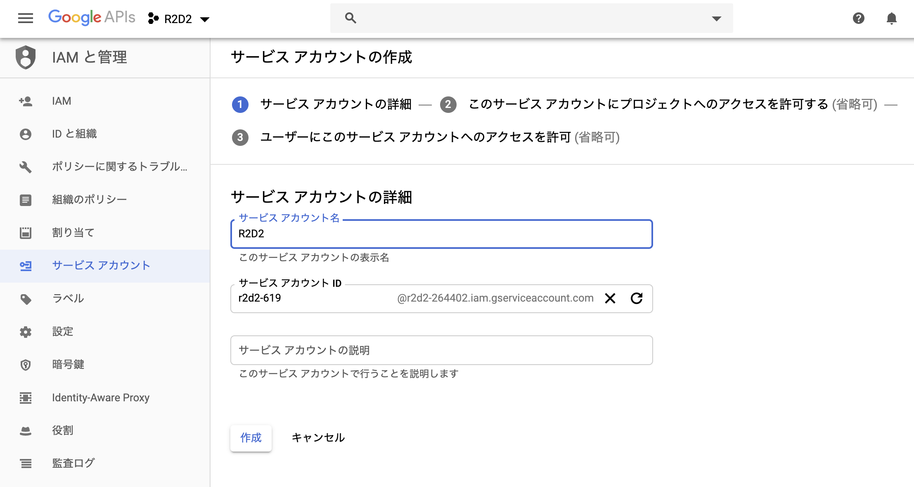
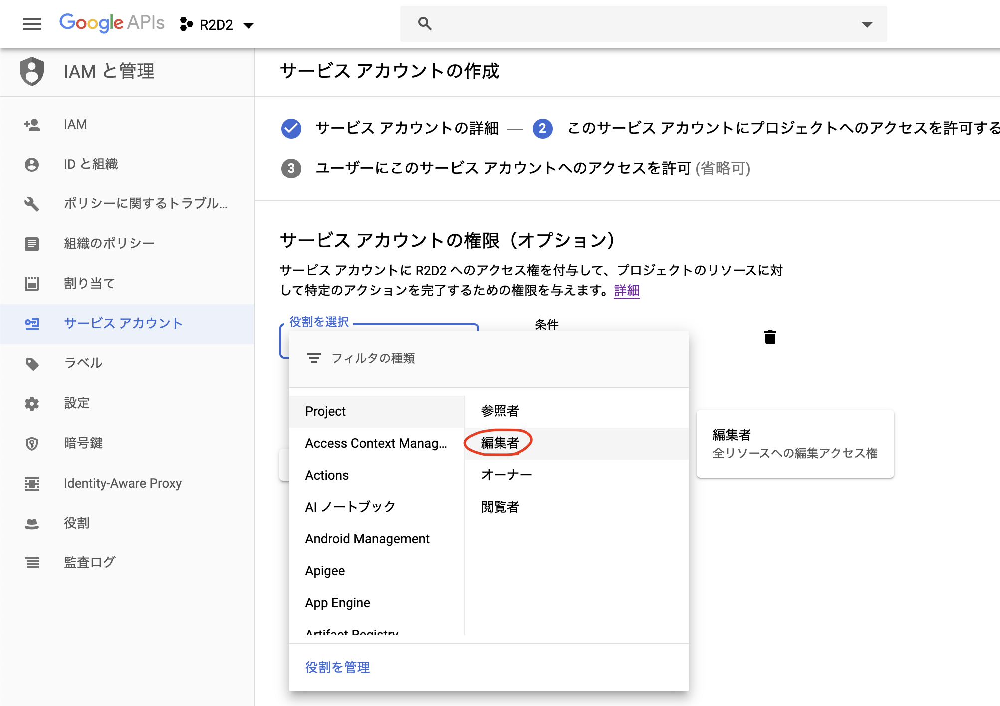
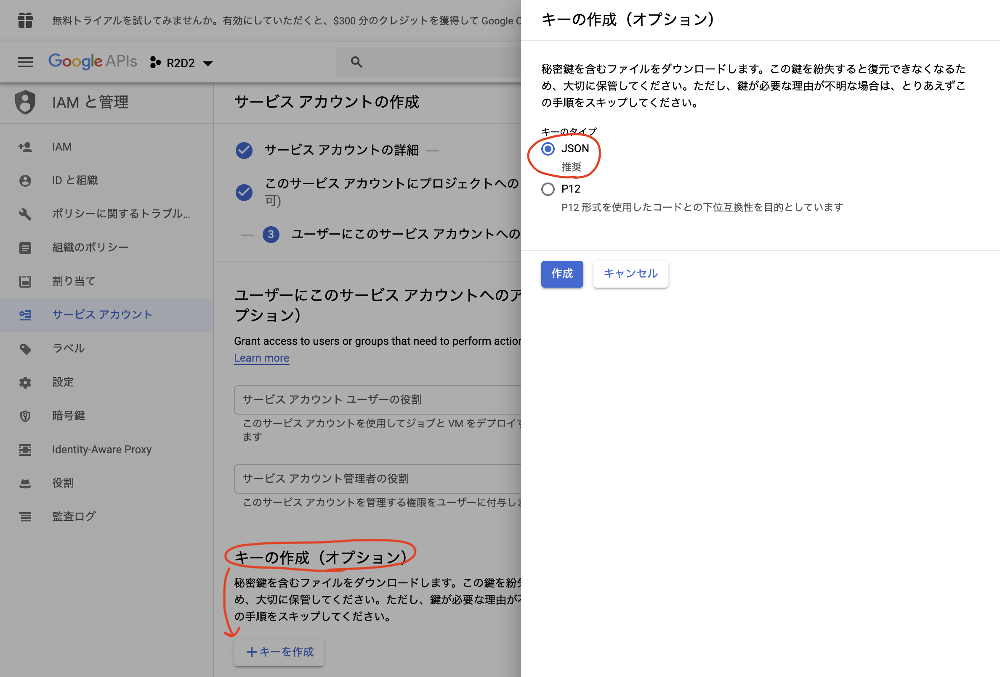
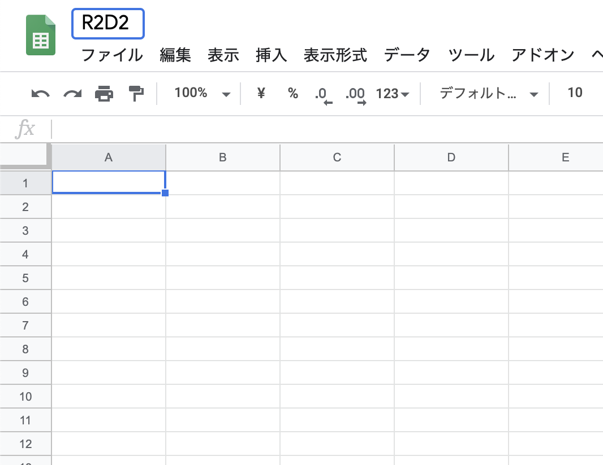
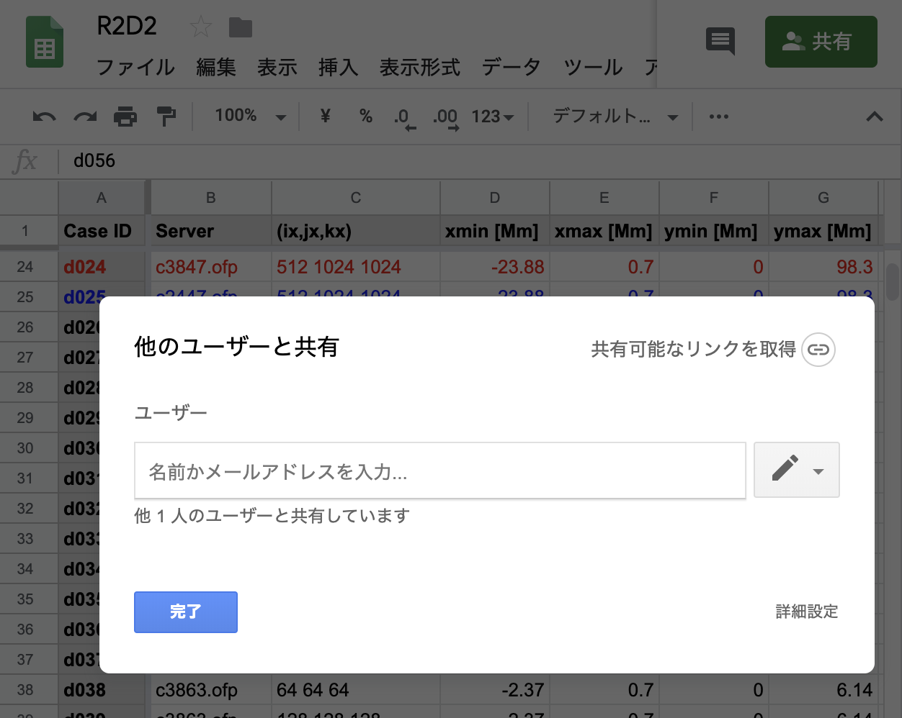

R2D2を使うための環境設定¶
R2D2コードを使って計算するだけならば任意のfortranコンパイラ, FFTW, MPIのみがあれば良い。 Pythonコードを使って解析する場合は、いくつかのモジュールが必要なので、そのインストールの方法もここで説明する。
Fortranコードの環境設定¶
Mac¶
Homebrewを用いて、必要なコンパイラ・ライブラリをインストールすることを推奨している。 コンパイラとFFTWのインクルードファイルとライブラリの位置だけ指定すれば良いので、 任意の方法でインストールして構わない。Homebrew以外を用いる場合は、便宜make/Makefileを編集すること。
Homebrewのインストール
/usr/bin/ruby -e "$(curl -fsSL https://raw.githubusercontent.com/Homebrew/install/master/install)"
gfortranのインストール
brew install gcc
OpenMPIのインストール
brew install openmpi
FFTWのインストール
brew install fftw
Linux (Ubuntu 18.04)¶
ここでは、Ubuntu 18.04の場合のみを説明する。
gfortranのインストール
sudo apt-get install gfortran
OpenMPIのインストール
sudo apt-get install openmpi-doc openmpi-bin libopenmpi-dev
FFTWのインストール
sudo apt-get install libfftw3-dev
Pythonコードの環境設定¶
Anacondaをインストールし、以下に示すモジュール群をインストールする。 MacとLinuxで共通する部分が多いのでまとめて説明を記す。
Anacondaのウェブサイト から対応するインストーラーをダウンロードする。
- Mac
dmgファイルをダウンロードして、インストール。インストールされるPATHが変わることが多いが、探してPATHを通す。
/anaconda/binや~/opt/anaconda/binなど
- Linux
ダウンロードしてきたシェルスクリプトファイルのあるディレクトリで .. code:
bash ~/Anaconda***.sh
インストールするディレクトリは
/ホームディレクトリ/anaconda3とする。/ホームディレクトリ/anaconda3にPATHを通す。 スパコンのログインノードなどでもインストール方法は共通である。
ipythonの初期設定¶
以下は必須ではないが、ipythonを使う時の初期設定ファイルである。
~/.ipython/profile_default/startup/00_first.py
というファイルを作りそこに以下のように記す。
import sys, os
import matplotlib.pyplot as plt
import scipy as sp
import numpy as np
from matplotlib.pyplot import pcolormesh,plot,clf,close
from numpy import sin,cos,tan,arcsin,arccos,arctan,exp,log,log2,log10,mod,sqrt,absolute,sinh,cosh,tanh,pi,arange
plt.ion()
from IPython.core.magic import register_line_magic
@register_line_magic
def r(line):
get_ipython().run_line_magic('run', ' -i ' + line)
del r
最後に記した設定によって、
r (Pythonスクリプト名)
とするだけで、スクリプトを実行できるようになる。
Googleスプレッドシート利用¶
計算設定などをGoogleスプレッドシートにまとめておくと便利である。 R2D2では、Pythonから直接Googleスプレッドシートに送信する方法を提供しているので、利用したい方は検討されたい。
手順については、 こちら を参考にしたが、少し手順が違うのでこのページでも解説する。
まずは関連するモジュールのインストール。
pip install gspread
pip install oauth2client
プロキシなどの影響でpipが使えない時は以下のようにする
gspreadのインストール
git clone git@github.com:burnash/gspread.git
cd gspread
ipython setup.py install
oauth2clientのインストール
git clone git@github.com:googleapis/oauth2client.git
cd oauth2client
ipython setup.py install
プロジェクト作成¶
ウェブブラウザで https://console.developers.google.com/cloud-resource-manager?pli=1 にアクセス。
{kind=link}
「プロジェクトを作成」として、プロジェクトを作成
{kind=link}
プロジェクト名はR2D2, 場所は組織なしとする。
API有効化¶
{kind=link}
次に検索窓にGoogle Driveと打ち込んで、Google DriveのAPIを検索
{kind=link}
Google Drive APIを有効にする。
{kind=link}
同様にGoogle Sheetsと検索
{kind=link}
Google Sheets APIを有効化
サービスアカウント作成¶
{kind=link}
Google APIロゴ → 認証情報 → サービスアカウントとたどる。
{kind=link}
サービスアカウント名はR2D2とする
{kind=link}
役割は編集者を選択
{kind=link}
キーの生成ではJSONを選択し、キーを生成する。 ダウンロードしたファイルは、使用する計算機のホームディレクトリにjsonというディレクトリを作成し、その下に配置する。そのディレクトリには、このjsonファイル以外には何も置かないこと。
スプレッドシート作成¶
以下のウェブサイトからGoogleスプレッドシートを作成 https://docs.google.com/spreadsheets/create
名前はプロジェクト名とする。R2D2では、pyディレクトリの上のディレクトリ名を読みそれをスプレッドシートの名前として情報を送るので、ディレクトリと同じ名前にする。
{kind=link}
講習会ではR2D2としておく。
{kind=link}
共有をクリックし、ダウンロードしたjsonファイルの中のclient_email行のEメールアドレスをコピーして、貼り付け。ここまでで、R2D2からGoogleスプレッドシートにアクセスできるようになる。